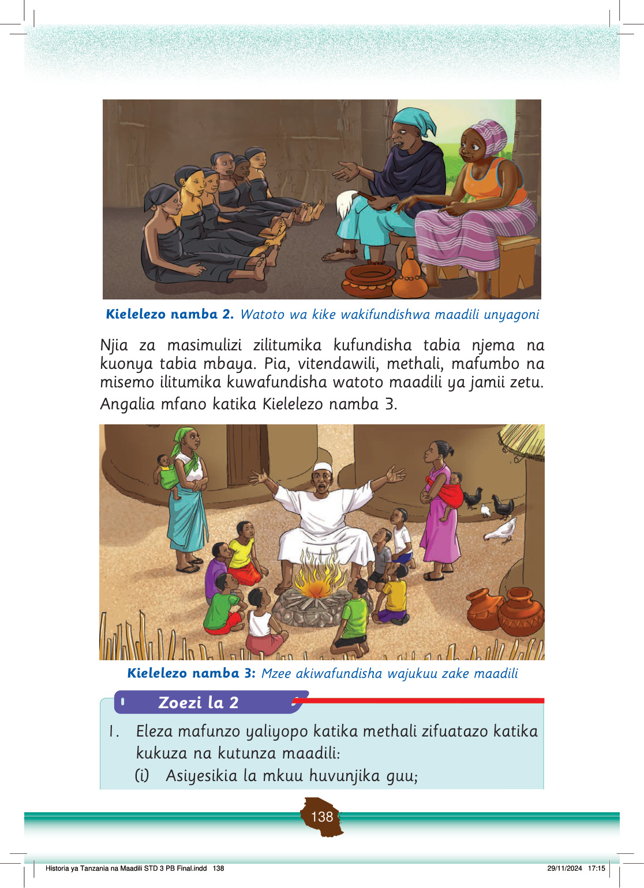

Watoto wa kike wamekaa pamoja wakifundishwa maadili ya unyago na wanawake wakubwa.
Kielelezo namba 2. Watoto wa kike wakifundishwa maadili unyagoni
Njia za masimulizi zilitumika kufundisha tabia njema na kuonya tabia mbaya.
Pia, vitendawili, methali, mafumbo na misemo ilitumika kuwafundisha watoto maadili ya jamii zetu.
Angalia mfano katika Kielelezo namba 3.
Mzee amekaa karibu na moto akiwafundisha wajukuu zake maadili, huku watoto wakimsikiliza kwa makini.
Kielelezo namba 3: Mzee akiwafundisha wajukuu zake maadili
Zoezi la 2
1.
Eleza mafunzo yaliyopo katika methali zifuatazo katika kukuza na kutunza maadili:
(i) Asiyesikia la mkuu huvunjika guu;